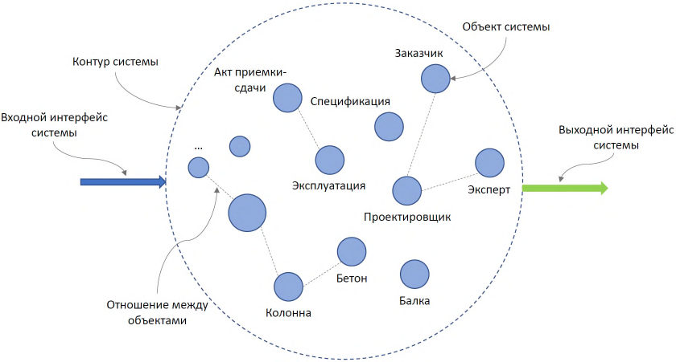
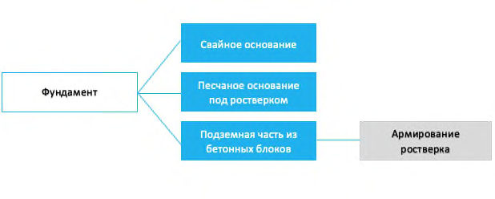
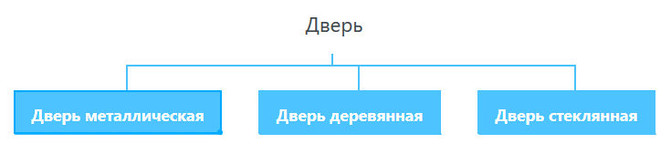
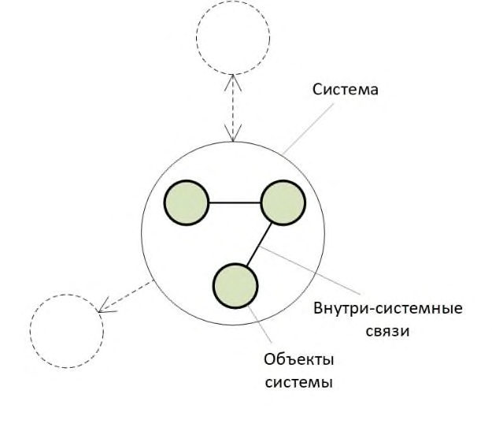
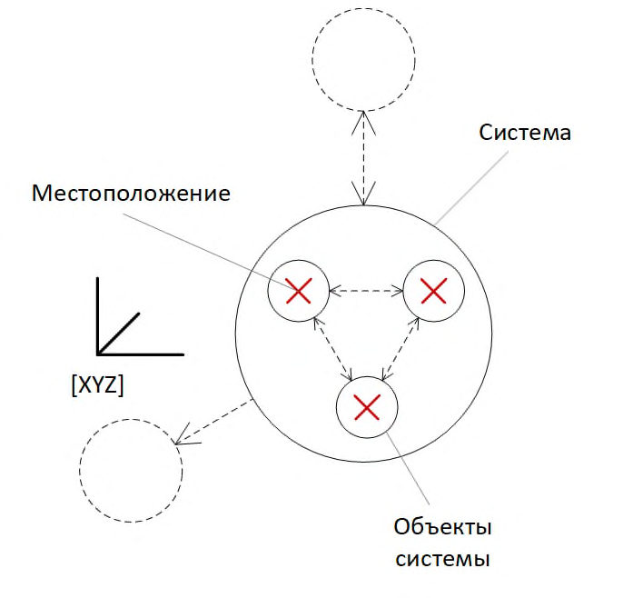
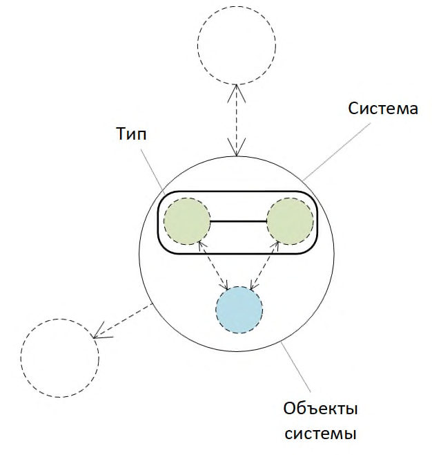

СП 328.1325800.2020 «Информационное моделирование в строительстве. Правила описа»
О документе: разработчики, утверждение, регистрация, ключевые слова
СП 328.1325800.2020
СВОД ПРАВИЛ СП 328.1325800.2020
Правила описания компонентов информационной модели
Издание официальное
Москва 2020
СП 328.1325800.2020
1 ИСПОЛНИТЕЛИ -Федеральное государственное бюджетное образовательное учреждение высшего образования «Национальный исследовательский Московский государственный строительный университет» (НИУ МГСУ), ЧУ ГК «Росатом» «ОЦКС»
2 ВНЕСЕН Техническим комитетом по стандартизации ТК 465 «Строительство»
3 ПОДГОТОВЛЕН к утверждению Департаментом градостроительной деятельности и архитектуры Министерства строительства и жилищнокоммунального хозяйства Российской Федерации (Минстрой России)
4 УТВЕРЖДЕН приказом Министерства строительства и жилищнокоммунального хозяйства Российской Федерации от 31 декабря 2020 г. № 927/пр и введен в действие с 1 июля 2021 г.
5 ЗАРЕГИСТРИРОВАН Федеральным агентством по техническому регулированию и метрологии (Росстандарт). Пересмотр СП 328.1325800.2017 Информационное моделирование в строительстве. Правила описания компонентов информационной модели
В случае пересмотра (замены) или отмены настоящего свода правил соответствующее уведомление будет опубликовано в установленном порядке. Соответствующая информация, уведомление и тексты размещаются также в информационной системе общего пользования - на официальном сайте разработчика (Минстрой России) в сети Интернет
© Минcтрой России, 2020
Настоящий нормативный документ не может быть полностью или частично воспроизведен, тиражирован и распространен в качестве официального издания на территории Российской Федерации без разрешения Минстроя России
СП 328.1325800.2020
Дата введения - 2021-07-01
УДК 65.011:006.354 ОКС 35.240.67
Ключевые слова: технологии информационного моделирования, жизненный цикл, объект капитального строительства, информационная модель, цифровая информационная модель объекта капитального строительства, инженерная цифровая модель местности
| Руководитель разработки Зав. кафедрой АиЭ НИУ МГСУ, д.т.н., доц. | __________________П.Д. Челышков |
|---|---|
| Исполнитель | |
| Научный руководитель НОЦ «Умный город» НИУ МГСУ, д.т.н., проф. | __________________А.А. Волков |
| Исполнитель | |
| Зам. директора НОЦ «Умный город» НИУ МГСУ | __________________Д.А. Лысенко |
| Исполнитель | |
| Доцент кафедры АиЭ, к.т.н. | __________________Т.В. Хрипко |
| Исполнитель | |
| Мл. научный сотрудник НОЦ «Умный город» НИУ МГСУ | __________________П.А. Бражников |
| Консультант | |
| Начальник Управления информационного моделирования ЧУ ГК «Росатом» «ОЦКС» | __________________С.А. Волков |
Введение
Настоящий свод правил разработан для обеспечения соблюдения требований федеральных законов от 30 декабря 2009 г. № 384-ФЗ «Технический регламент о безопасности зданий и сооружений», от 27 декабря 2002 г. № 184-ФЗ «О техническом регулировании».
Свод правил разработан авторским коллективом Федерального государственного бюджетного образовательного учреждения высшего образования «Национальный исследовательский Московский государственный строительный университет» (д-р техн. наук П.Д. Челышков , д-р техн. наук А.А. Волков , Д.А. Лысенко , канд. техн. наук Т.В. Хрипко , П.А. Бражников ) при участии ЧУ ГК «Росатом» «ОЦКС» ( С.А. Волков ).
1Область применения
Настоящий свод правил распространяется на процесс формирования библиотек компонентов для разработки информационных моделей объектов капитального строительства, размещаемых в государственной информационной системе обеспечения градостроительной деятельности Российской Федерации и (или) государственных информационных системах обеспечения градостроительной деятельности субъектов Российской Федерации.
2Нормативные ссылки
В настоящем своде правил использованы нормативные ссылки на следующие документы:
ОК 034-2014 (КПЕС 2008) Общероссийский классификатор продукции по видам экономической деятельности (ОКПД2)
СП 333.1325800.2020 Информационное моделирование в строительстве. Правила формирования информационной модели объектов на различных стадиях жизненного цикла
ИНФОРМАЦИОННОЕ МОДЕЛИРОВАНИЕ В СТРОИТЕЛЬСТВЕ Правила описания компонентов информационной модели
Building information modeling. Rules for describing information model components
СП 328.1325800.2020
Примечание - При пользовании настоящим сводом правил целесообразно проверить действие ссылочных документов в информационной системе общего пользования - на официальном сайте федерального органа исполнительной власти в сфере стандартизации в сети Интернет или по ежегодному информационному указателю «Национальные стандарты», который опубликован по состоянию на 1 января текущего года, и по выпускам ежемесячного информационного указателя «Национальные стандарты» за текущий год. Если заменен ссылочный документ, на который дана недатированная ссылка, то рекомендуется использовать действующую версию этого документа с учетом всех внесенных в данную версию изменений. Если заменен ссылочный документ, на который дана датированная ссылка, то рекомендуется использовать версию этого документа с указанным выше годом утверждения (принятия). Если после утверждения настоящего свода правил в ссылочный документ, на который дана датированная ссылка, внесено изменение, затрагивающее положение, на которое дана ссылка, то это положение рекомендуется применять без учета данного изменения. Если ссылочный документ отменен без замены, то положение, в котором дана ссылка на него, рекомендуется применять в части, не затрагивающей эту ссылку. Сведения о действии свода правил целесообразно проверить в Федеральном информационном фонде стандартов.
3Термины, определения и сокращения
В настоящем своде правил применены термины по [1], [2], [3], [4], а также следующие термины с соответствующими определениями:
- 3.1.2 компонент
- Цифровое представление части объекта капитального строительства или территории, характеризуемое атрибутивными и геометрическими данными, предназначенное для многократного использования. Примечание - Компонент библиотеки информационной модели, примененный в цифровой информационной модели, становится элементом цифровой информационной модели. В составе цифровой информационной модели указанный элемент расширяется, как СП 328.1325800.2020 минимум, атрибутивными данными, характеризующими цифровую информационную модель объекта капитального строительства.
- 3.1.3 абстрактный объект
- Компонент, который не имеет физического воплощения, но существует для целей структурирования множества объектов (сборок) в рамках системы, строительного изделия, нетипового изделия, оборудования, элемента строительной конструкции и строительного материала. Примечание - Примерами таких абстракций могут быть сами системы, обозначаемые для идентификации группы объектов.
- 3.1.4 подсистема
- Объект, сам являющийся системой и входящий в состав более крупной системы. Примечание - Объект «холодильная машина» является подсистемой системы «система холодоснабжения», в свою очередь также является системой для объектов «компрессор» и «теплообменник», которые входят в состав объекта «холодильная машина».
- 3.1.5 интерфейс взаимодействия объектов
- Совокупность связей, посредством которых объекты взаимодействуют с окружающей средой или другими объектами. Примечание - Например, объекты инженерных систем предполагают необходимость обозначения интерфейсов взаимодействия, которые отражали бы свойства и характеристики «сочленения» системы, включая указание среды, обмен которой происходит через указанные интерфейсы. ДЭ - документ электронный; ИМ - информационная модель; ИЦММ - инженерная цифровая модель местности; САПР - система (системы) автоматизированного проектирования; ЦИМ - цифровая информационная модель. СП 328.1325800.2020
4Общие положения
Примечание - Пример графического отображения интерфейсов взаимодействия для строительной системы показан на рисунке 4.1. В качестве входного интерфейса системы может выступать, например, законодательство Российской Федерации.
Рисунок 4.1 Основные элементы системы

Примечание - Пример для отношения часть - целое показан на рисунке 4.2. Свайное основание, песчаное основание под ростверком, ростверк и подземная часть из бетонных блоков являются частями целого - фундамента. Так же и армирование ростверка является частью ростверка.
Рисунок 4.2 Пример отношения часть - целое

Примечание - Пример для отношения типа показан на рисунке 4.3. Понятие «дверь» является родовым понятием для таких понятий, как «дверь металлическая», «дверь деревянная» и «дверь стеклянная».
Рисунок 4.3 - Пример отношения типа

- функциональный аспект;
- аспект продукта;
- аспект местоположения;
- аспект типа объекта.
Примечание - При формировании компонентов библиотеки ИМ компонент (например, «дверь») и связанные с ним другие компоненты должны иметь, как минимум, функциональный аспект, чтобы можно было их отнести к элементам архитектуры.
СП 328.1325800.2020
Рисунок 4.4 Схематичное отображение аспекта продукта

Примечание - Аспект продукта в большей степени учитывает особенности именно технической реализации системы, например способ устройства фундамента или метод разработки котлована. Структура представления системы, основанная на аспекте продукта, показывает принцип и порядок декомпозиции системы на отдельные объекты независимо от того, где находится объект и какую функцию он выполняет. С учетом аспекта продукта объект может находиться в одном или нескольких местах по отдельности или совместно с другими изделиями. Например, система контроля за температурой в помещении может состоять из отдельных датчиков температуры и блока отображения (монитора) и быть распределенной по отдельным помещениям, расположенным по всему зданию.
Рисунок 4.5 Схематичное отображение аспекта местоположения

Примечание - Объектом, представленным в ориентированной на местоположение структуре представления системы, могут быть, например, строительная площадка, строительный комплекс, строительный объект (здание), отдельная секция здания, этаж или помещение, а также различные плоскостные сооружения, такие как парковая зона, улица, стоянка автомобилей или тротуар.
Рисунок 4.6 Схематичное отображение аспекта типа

5Функциональные требования к компонентам библиотек информационных моделей
- требуемый формат и наименование компонента;
- требуемое геометрическое представление;
- требуемая атрибутивная информативность.
СП 328.1325800.2020
6Требования к кодированию компонентов библиотек информационных моделей
Таблица 6.1 Правила наименования файлов компонентов библиотек ИМ
| Блок 2 | Блок 1 | Блок 0 |
|---|---|---|
| Шифр по Классификатору строительных ресурсов | Обозначение наименования и версии САПР | Обозначение версии IFC файла (опционально) |
| 23.69.19 | AR20 | I4x2 |
| 28.14.13 | GA22 | I4x2 |
| … | … | … |
Таблица 6.2 Правила наименования компонента Блок 0
| Код | Наименование |
|---|---|
| I2300 | IFC2x3 версии 2.3.0.0 |
| I2301 | IFC2x3 версии 2.3.0.1 (IFC2x3 TC1, ISO/PAS 16739:2005) |
| I2301C2 | IFC2x3 версии 2.3.0.1 Coordination View версии 2.0 |
| I4000 | IFC4 версии 4.0.0.0 (ISO 16739:2013) |
| I4010 | IFC4 версии 4.0.1.0 (IFC4 ADD1) |
| I4020 | IFC4 версии 4.0.2.0 (IFC4 ADD2) |
| I4021 | IFC4 версии 4.0.2.1 (IFC4 ADD2 TC1, ISO 16739-1:2018) |
| I4100 | IFC4 версии 4.1.0.0 (IFC4.1) |
| I4200 | IFC4 версии 4.2.0.0 (IFC4.2) |
| I4200C2 | IFC4.2 версии 4.2.0.0 Coordination View версии 2.0 |
| I4200DT | IFC4.2 версии 4.2.0.0 Design Transfer View |
| I4200R | IFC4.2 версии 4.2.0.0 Reference View |
| I4200SA | IFC4.2 версии 4.2.0.0 Structural Analysis View |
| I4200FH | IFC4.2 версии 4.2.0.0 FM Handover View |
| I43R1 | IFC4 версии 4.3.rc.1 (IFC4.3 RC1) |
| I43R2 | IFC4 версии 4.3.rc.2 (IFC4.3 RC2) |
| I5x0 | IFC перспективной версии 5 |
| LXM10 | LandXML-1.0 |
| LXM11 | LandXML-1.1 |
|---|---|
| LXM12 | LandXML-1.2 |
| LXM20 | LandXML-2.0 |
| CGM10 | CityGML Versions 1.0 |
| CGM20 | CityGML Versions 2.0 |
| CGM30 | CityGML Versions 3.0 |
Таблица 6.3 Правила наименования компонента Блок 1
| Код | Наименование |
|---|---|
| AR16 | Autodesk Revit 2016 |
| AR17 | Autodesk Revit 2017 |
| AR18 | Autodesk Revit 2018 |
| AR19 | Autodesk Revit 2019 |
| AR20 | Autodesk Revit 2020 |
| AN16 | Autodesk Navisworks 2016 |
| AA | Autodesk Autocad |
| AM | Autodesk 3DMax |
| BIMX | BIMx |
| C4D | Cinema 4D |
| GA22 | GRAPHISOFT Archicad |
| NK | Nanosoft nanoCAD Конструкторский BIM |
| NE | Nanosoft nanoCAD Инженерный BIM |
| NL | Nanosoft nanoCAD Электро |
| NA | Nemetschek AllPlan |
| NS | Nemetschek SCIA |
| ND | Nemetschek Data Design System CAD |
| RA212 | Renga Architecture 2.12.xxxxx |
| RS212 | Renga Structure 2.12.xxxxx |
| RM | Renga MEP |
| TT | Trimble Tekla |
| TS | Trimble SketchUp |
| OF | Open Source FreeCAD |
| OB | Open Source Blender |
7Требования к форматам компонентов библиотек информационных моделей
- «черно-белый» (при отсутствии в документе графических изображений и (или) цветного текста);
- «оттенки серого» (при наличии в документе графических изображений, отличных от цветного графического изображения);
- «цветной» или «режим полной цветопередачи» (при наличии в документе цветных графических изображений либо цветного текста).
СП 328.1325800.2020 случаев, когда текст является частью графического изображения).
8Требования к атрибутивному составу компонентов библиотек информационных моделей
9Требования к геометрической детализации компонентов библиотек информационных моделей
Библиография
- [1] Федеральный закон от 6 апреля 2011 г. № 63-ФЗ «Об электронной подписи»
- [2] Федеральный закон от 27 июля 2006 г. № 149-ФЗ «Об информации, информационных технологиях и о защите информации»
- [3] Федеральный закон от 30 декабря 2009 г. № 384-ФЗ «Технический регламент о безопасности здании и сооружении » ̆ ̆
- [4] Приказ Министерства строительства и жилищно-коммунального хозяйства от 6 августа 2020 г. № 430/пр «Об утверждении структуры и состава классификатора строительной информации» СП 328.1325800.2020